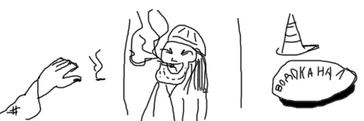

Hi and welcome to my Homepage!
I'm practicing doin here some Web things (HTML for now)
It's not about selling image but it's 'bout clear code inside. That means ze real gem is in HTML code. Not the browser view
I'm using informal english here 'cuz I'm gonna fleX my MAD $KILLZ
U can see next features here:
Semantic Elements
Internal CSS
Buttons
List which's mentioning List
Scaling
And more...
About me
My personality
Once upon a time got u! I'm 24 y.o. and I wanna be a cool proggerman sooo baad.
I bet u can't imagine. It's not about money but it's about a life goal. Remember Max Lavrov from TV show "Kitchen".
He says he knew he wouldn't be neither a mechanic nor a fireman. He should be a cook. Replace 'cook' to 'proggerman'
and it would be all about me.
In fact, Im kinda the internet citizen. My professional growth and entertainment are all around the internet.
As modern fella I have some tricks to recognize AIslop. The main is:
Search for hyphen symbols in text sheets. Nobody uses NUMPAD to text it manually. I have to go. They are coming...
I'm into videogames indeed! The last achievements in there sounds like that. At First, I definitely understand Victoria 2 economy aspect and I made the video guide about how to form Jugoslavia with Laissez-faire.
The second one is I have special trait to recognize finnish folks in Overwatch matches. I swear I don't know finnish but I see their nicknames and make right conclusions.
The funniest pre-battle chat was kinda that:
(I see whole enemy team from Finland)
me: sissalis sota suomi perkele :D
enemy tank: get the fuck of from my Finland! (in finnish)
me: 0_o
I also can play simple music on harmonica and guitar. I used to make a videogame by Unity Engine but with no great idea I gave up.
Anyway I learnt some skills. For example, I can make cartoon animations (not 3D like Blender). I even make couple of music clips in my style!
And the last one I have something in writting.
Sing together with this map (point to frames)!

My professional skills
I'm eager enumerate my skills with discription list:
Common OOP with C#
that means I can make some kind of desktop applications if I have enough time tho
Basic Frontend
I mean I know how to make pages using HTML5 and CSS
Frameworks and libraries
I'm in common with some things that make it much easier to make a web-server, a telegram bot or make a simple query to DB
Determination
I've making my own pet-project since 2023! (Unfortunately it's not about the code but some general science)
Learning
I'm into learning. Especially if I can apply new skills in practice immediately
My creatiff
Here we go. In this chapter I'm sharing with you my last arts or smth
The world is yours
I made short music clip for one familiar girl. She extremely liked it!
I made this clip via Moho Pro and Vegas Pro. The clip splitted to very short scenes which I can handle to direct and produce.
The whole clip styled in Neon_dark_night_core or something. It's worth to see!
Oh. Barely forgot it. The music. I used DEAD BLONDE's song Не такая, как все. The real
magic was when I managed to extra degrease the quality of sound. After that song started to sound like it old cold and nostlagic.
Philatelist
There is one of my short stories below. I wrote it last autumn. Enjoy!
- Пока ты там, ты сам за себя понял? Мы можем и не успеть.
- За меня не беспокойтесь. Открывайте.
Очередные ритуалы с дверью и психолог попал в хату. Ну хата как хата. Представляете, наверное, да?
- Кто здесь Огниво?
Пахан насторожился:
- Я.
- Меня зовут Дмитрий Костромской. Я вот с какой целью интересуюсь: как вы уже знаете, вы идете на УДО. Начальство выделило мое время, чтобы я мог помочь вам адаптироваться к жизни на воле. Психолог я.
- Кто свободен, тому и за забором свобода.
- Правильно. Но тут, понимаете, время меняется. Страна меняется. У нас политехническое образование в почете. Физика. Видели последние достижения Роскосмоса?
- Не грузи.
- Понимаю. Вы сами должны решить, нуждаетесь ли вы в моих услугах. Это не принудиловка. Скажете к вам не приходить, то и не буду. Психолог своим видом показал, что готов уйти. Это не бросалось в глаза. Профессиональная актерская игра.
- Давай, выкладывай. Чё там ты хотел мне про физику рассказать.
Психолог стал очень завораживающим слогом, буквально, стелить про физику. Скучные моменты опускал. Интересные усиливал.
Где-то минут за 30 уже половину школьной программы было рассказано. И на моменте оптики остановимся подробнее.
- ...таким образом свет – это частичка, мы его воспринимаем глазом как наблюдатель, вот и видим.
- А кто такой наблюдатель?
- Вы меня видите? Вы наблюдатель. И я вас вижу. И я наблюдатель.
Вообще-то вся камера уже остановила свою рутину и внимательно слушала психолога. И один из них не удержался и спросил:
- А фотон от петуха мы тоже видим глазом? - Ну да, иначе бы вы самого петуха не видели бы.
Есть. Первый этап пройден. Информация усвоена. Дальше снова физика.
После, пахан и психолог условились встретиться завтра в это же время. Психолог покинул камеру. Конвоиры отвели подальше, чтоб не было слышно. Психолог сказал:
- Подсадной хорошо играет. Если вторую фразу вечером скажет как надо, то вашей проблемы как не бывало.
На следующее утро психолога конвоиры сразу отвели к куму. Кум был немного растерян. Совсем немного. Вы бы этого даже не заметили.
- Ну. Давай расскажи про свой план. Потом я скажу.
Психолог слегка занервничал: лёгким касанием он поправил прядь, которой секунды назад вообще-то не было.
- Как я и говорил до этого, мне надо было создать условия, в которых главный авторитет на вышей зоне потеряет свой статус,
а вместе с ним и весь воровской закон канет в Лету.
Короткий выдох.
- Я договорился с одним из стукачей, чтоб он заострил внимание в моем рассказе про фотоны. А именно про петухов. После этого он должен был в спокойной обстановке задаться вопросом,
а не зашквар ли это ловить глазом петушиные фотоны. Сегодня я планиру...
- Довольно. Теперь я скажу. Твой мудреный план сработал. Сработал, мда...
Явная растерянность.
- Вчера вечером отбоя не было. Наш товарищ, так сказать, Огниво м-м-м... лишился своих регалий.
После этого ночью на конях в другие хаты передали, что, оказывается, Огниво – не закон.
Начались бунты. Ну вы знаете...
Психолог внимательно слушал. Или делал вид...
- Ближе к утру ситуация накалилась. Вызывали сиюминутчиков, так сказать...
- Вы про солдат? Это их грузовики на КПП?
- А. Так вы же все видели. Короче, всё. Нет здесь больше воровских законов. Это теперь красная зона, хе-хе.
Вообще-то противный смешок. Кум продолжил:
- Вы знаете, я думал вы, психологи, настоящие дармоеды. Которые занимаются только тем, что паразитируют на проблемах честнОго народа. А вы во-о-он чаво можете.
- Ну да. Не зря же я 4 года учился Гегеля от Канта отлича...
- Не выражаться при мне!
Commentary
The film 'Беспредел' quite thrilled me and I decided to make couple of references to it. And of course the idea about punk photon isn't mine. I've seen this punchline on 2ch.org
Panslavic Balkanian Republic. Victoria 2 guide
Introduction
Observe my overmind superior of command and strategy! It is a written type of my video guide.
You are better to be in common with Victoria 2 or you will understand nothing!
What make my guide special
It is not so difficult to form Jugoslavia in Vic2. Some folks manage to do it just on Live. But there is a little detail. They forms Jugoslavia as kingdom with no options to do real democracy like USA. Only UK-style with HM's Goverment.
I followed further. I made Jugoslavia as republic with free market at all. It was enough strong economy. Even my war plants were giving me positive income.
Is it possible
Yeah. It is possible. Watch and learn.
Kingdom Serbia starts as Absolute monarchy with Appointed conservative Upperhouse. The thing is Serbia have no people to Appoint to Upperhouse (no POPs: Aristocrats and Capitalists). That means the game forms your Upperhouse like it Only ruling party Politic. It is the main detail of my walkthrough. The second one is that you can liberate your Dictatorship's Upperhouse with Under pressure of Queen.
I cannot properly explain all details here. Watch it by yourself!
Oh... oh! There is some funny part there! There was era of social monarchy in 70s. Sounds like bruh